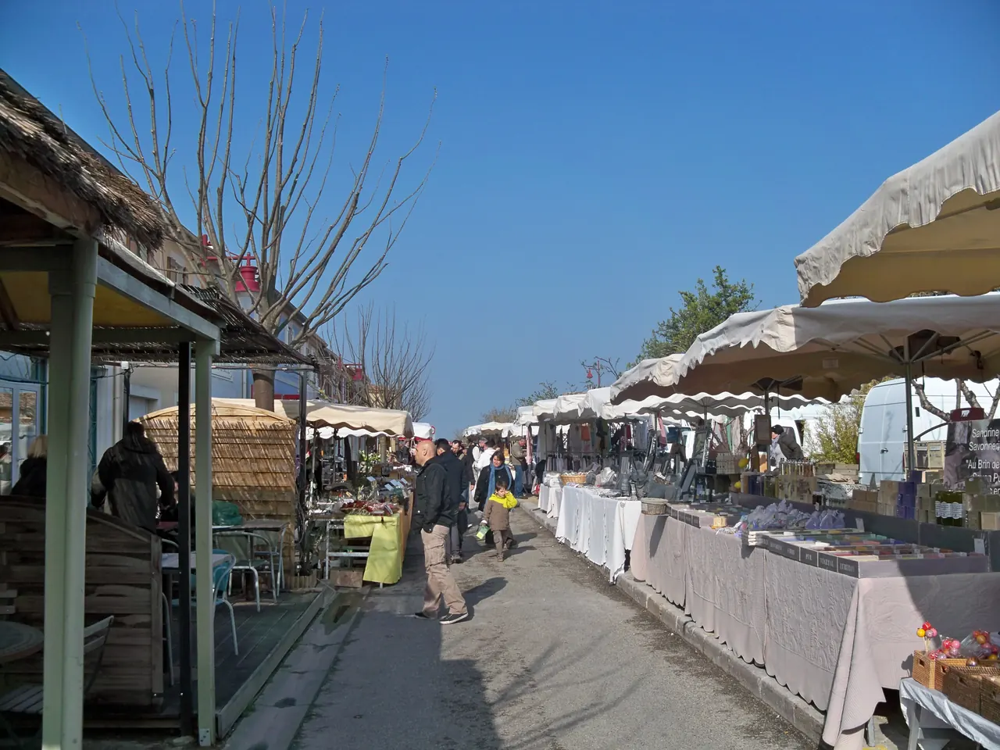
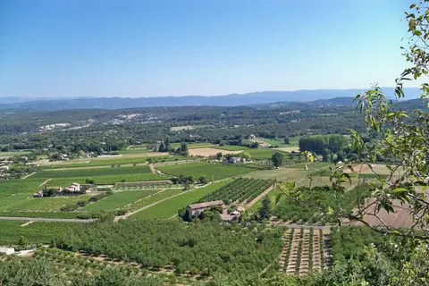

{kind=link}

Abbaye de Sénanque
1148년에 세워졌다.

| 운영시간 | 생산자시장 매주 일요일 08:00–13:00 (2026-03-29~12-27) |
|---|---|
| 휴무 | 일요일 장터만 정기 개장(3/29~12/27). 수요일 저녁 장터는 9/2 로 종료 — 그 외 요일 시장 없음 |
| 요금 | 무료 |
| 예약 | 예약 불필요·입장 무료 (뤼베롱 지역자연공원 marché paysan 인증 장터) |
| address | Place du marché, 84660 Maubec |
📍 Place du marché, 84660 Maubec · 🕐 생산자시장 매주 일요일 08:00–13:00 (2026-03-29~12-27) · 휴무 일요일 장터만 정기 개장(3/29~12/27). 수요일 저녁 장터는 9/2 로 종료 — 그 외 요일 시장 없음 · 예약 불필요·입장 무료 (뤼베롱 지역자연공원 marché paysan 인증 장터)
쿠스텔레 시장은 4월부터 12월까지 일요일 8:00–13:00에 선다.
9월 13일이 일요일이다. 개최 기간과 요일이 모두 맞는다.
생산자 시장이라는 것 재판매상이 아니라 생산자가 직접 파는 시장이다. 관광 시장(리슬쉬르라소르그 일요일)과 성격이 반대다. 농가 3박의 첫 장보기를 여기서 하는 것이 이 일정의 설계다.
13시에 끝난다 엑상 체크아웃 → 뤼르마랭 → 쿠스텔레 순서인데, 쿠스텔레가 13시 마감이다. 뤼르마랭에서 지체하면 장을 못 본다. 위 출발 시각을 지킬 것.
쿠스텔레는 마을이라기보다 교차로다 — 고르드·메네르브·아비뇽 방향 도로가 만나는 지점이라 뤼베롱 농가들이 접근하기 좋아 생산자 시장이 여기 자리 잡았다. 좌판마다 파는 사람이 만든 사람이다: 염소 치즈는 그 농가의 염소에서, 꿀은 그 언덕의 벌통에서 온다. 계절이 좌판을 결정하므로 9월 중순이면 무화과·포도·첫 호박·말린 허브가 화면의 중심이 된다.
농가 3박의 식탁이 이 시장에서 시작된다 — 치즈·빵·과일·채소를 이틀 치로 사고, 와인은 마을 상점에서 보충한다. 흥정은 하지 않는 문화이고, 맛보기는 권하면 받는다. 주차장이 시장 규모에 비해 작아 10시 전 도착이 유일한 확실한 방법이다. 시장 뒤편의 라벤더 박물관은 이 일정에서는 넣지 않는다 — 장보기가 이 정차의 목적이다.
첫날 장보기는 주제 파일 참조.
1148년에 세워졌다.

계곡 건너 라코스트와 마주 보는 사면 마을로, 뤼베롱 마을 중 수직 낙차가 가장 크다

바위 봉우리 위에 지어진 마을로, 갈로-로마 시대부터 방어의 기능을 가졌다.

관광버스가 들르지 않는 언덕마을이라는 것이 이 마을의 가치다.

카뮈는 새 스승 장 그르니에를 만났는데, 그르니에가 1930–31년에 로랑비베르 재단(뤼르마랭 성)의 입주자였다.

피터 메일의 『프로방스에서의 1년』 무대가 된 능선 마을이다